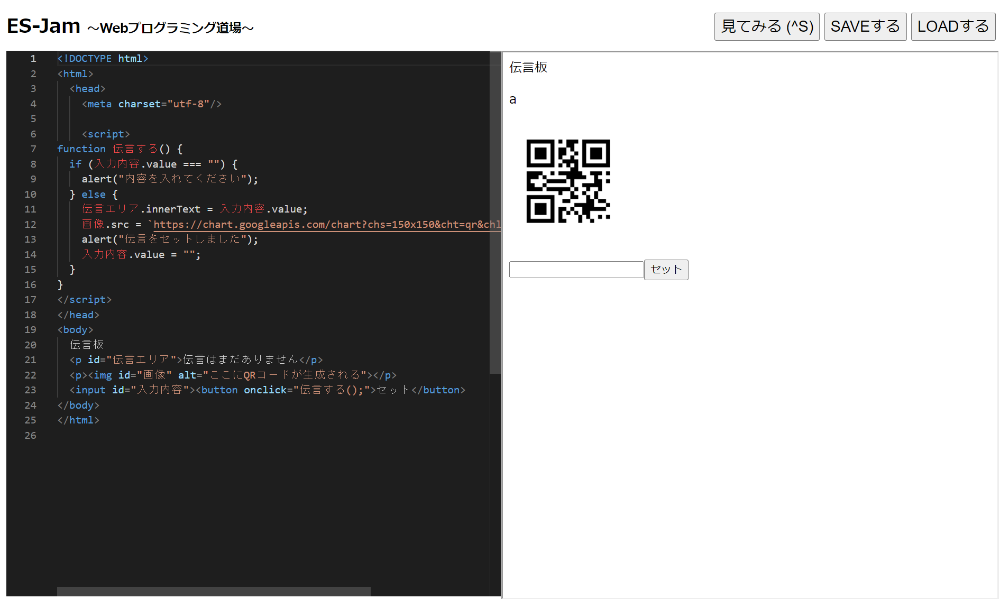

第3週目
3-1 JavaScript体験：VR空間を作る
伝言板
1.内容
プログラミングを行ってVR空間をつくる
2.感想
前回までは本格的にプログラミングをしていなかったので、今回本格的にプログラミングをしてみて、とても難しかった。
しかし、少しプログラミングをいじったりするだけで物に変化が起こったりしておもしろかった。
3-2 JavaScript体験：伝言プログラムを作る

伝言板
1.内容
伝言プログラムをつくる
2.感想
前までは文字の色を変えたり大きさを変えたりすることしかできなかったけれど今回さらに先の事を修得できてとてもいい経験になった。
QRコードをだしたときにはとても感動して自分からもプログラムを作っていけたらなと考えた。
3-3 JavaScriptプログラムの３次元空間の体験
1.内容
先生が作った三次元空間を体験する。
2.感想
一番最初に体験した物体が今度は自分の目の前に出てきてとても驚いたし感動もした。さらには白いボールを投げれたときには面白かったしまだまだ体験したいと思った。
これを今度は自分から作り出し体験することができたらなと考えた。そして社会のために使えるのではないかと今回のVR体験をとおして考えた。